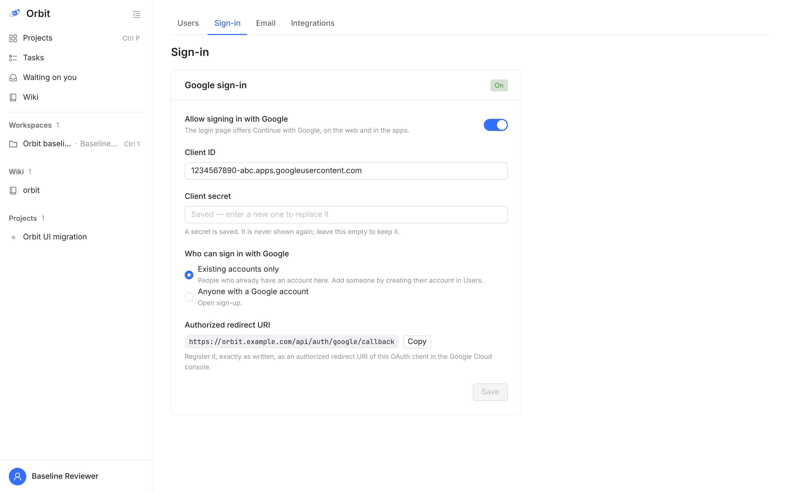
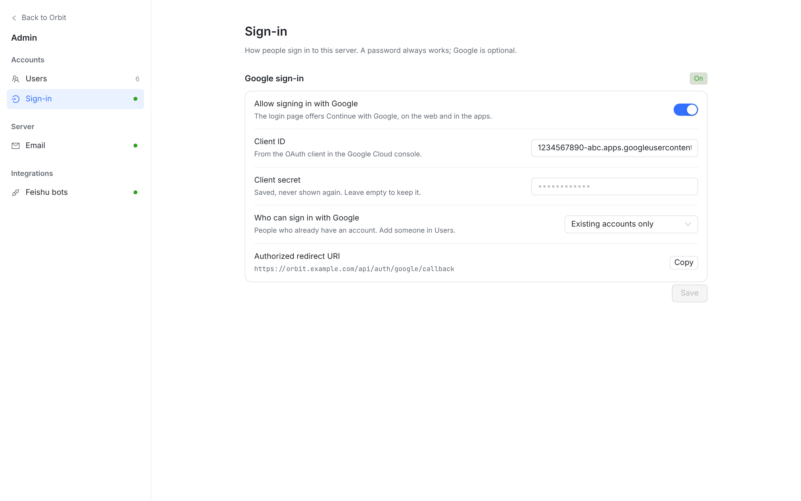
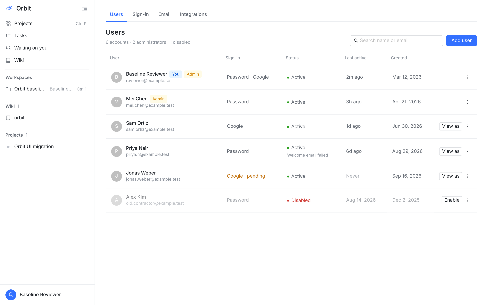
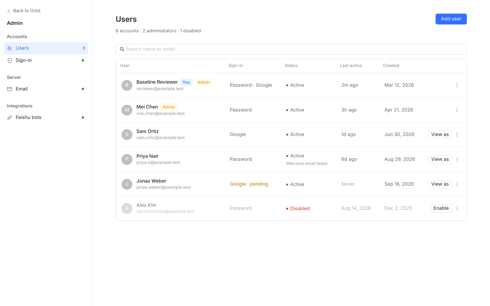
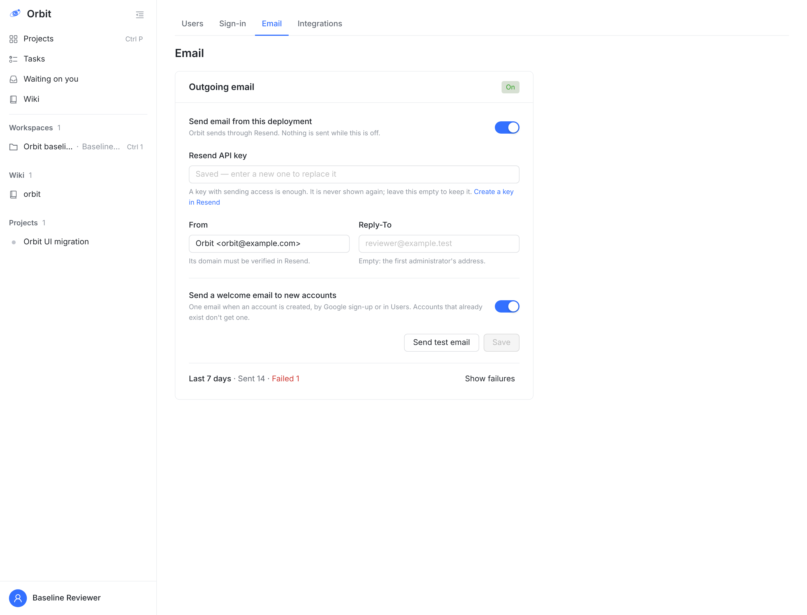
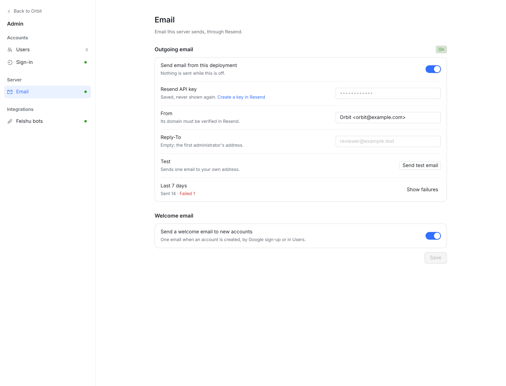
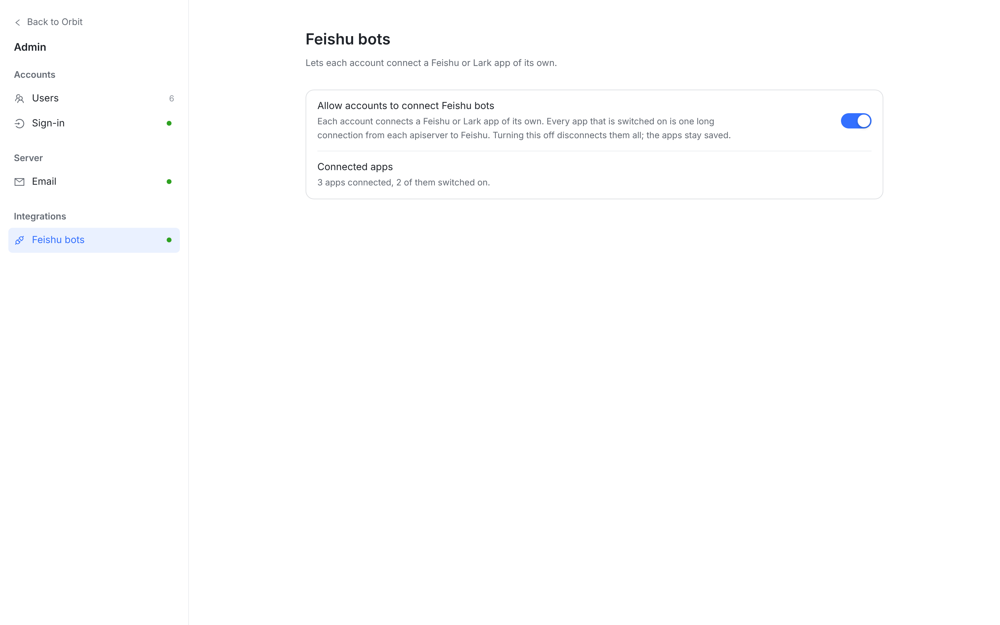
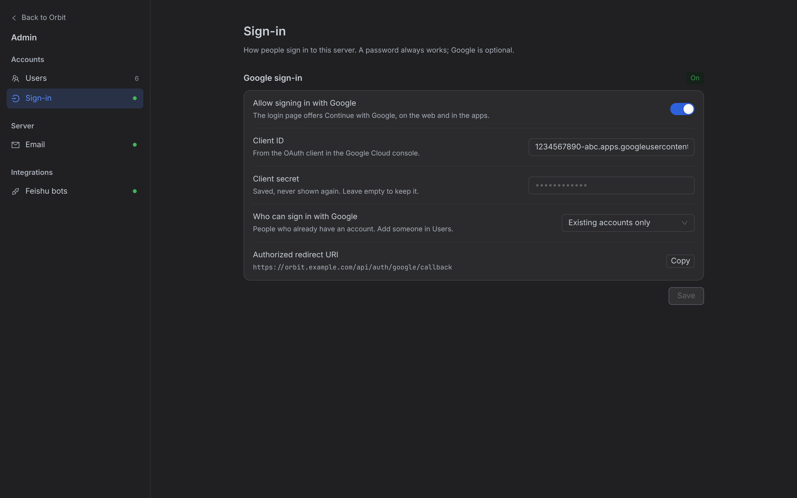
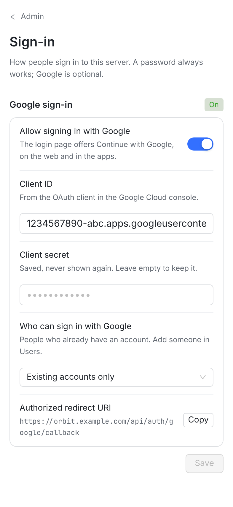

真实页面截图：左边是今天的 /admin/sign-in，右边是原型树的同一页（同一套 fixtures、1440×900、浅色）。方案只换外壳和排版，接口、文案含义、保存方式都不变。


1 2 3 4 5 6 7settingsReturnPath()）。App 侧栏不再出现。/admin、/admin/sign-in、/admin/email、/admin/integrations。SettingsHeader：标题 + 一句说明，居中 880px 列（Users 用 1080px 宽列）。SettingsSection，徽标从卡片头挪到分区标题行。SettingsRow：左边名称 + 一行说明，右边控件（开关 / 300px 输入框 / 下拉 / 按钮）。原来的单选组变成下拉，长说明压成一行。表格本身（列、⋯ 菜单、View as、Enable、对话框）一行不改；只是放进 Settings 外壳的宽列里，搜索框挪到标题下，表格进圆角卡片。


1 2 3 4SettingsHeader 的 action 位，标题行右侧）。settings-page--wide）。Email 拆成两个分区：Outgoing email（开关、Key、From、Reply-To、测试、近 7 天）和 Welcome email；Integrations 页直接叫 Feishu bots。


1 2 3


输入框 / 下拉行在窄屏换行，控件占满宽度。
账号菜单的 Admin 入口不变，打开后整窗口换成 Admin 导航 + 页面。
理由：Settings 管「我自己」，Admin 管「整台服务器」，分开不会混；Settings 的导航已经有 5 组（机器、工作区列表可能很长），再塞一组会被挤到最底下。只有管理员能看到 Admin，普通成员的 Settings 不受影响。
地址改成 /settings/admin/…，/admin 重定向；账号菜单的 Admin 入口去掉。
好处：只有一个设置入口，Settings 的搜索也能搜到 Admin 的项。代价：个人设置和全服务器设置挨在一起，容易误改；这一组在长列表的最底部。
Client ID + Secret、API key + From 必须一起才有效；逐项保存时，改到一半服务器就处于「开着但配错」的状态。Feishu bots 只有一个开关，今天就是即改即存，不变。
开关立即生效，输入框失焦保存。和 Settings 更一致，但凭据要拆成「编辑…」对话框才安全，改动更大。
| 改动 | 文件 | 代价 |
|---|---|---|
1. AdminLayout：复用 settings-shell / settings-nav，导出 NavGroup、NavRow 复用；Esc / Back to Orbit；窄屏导航页 | components/settings/AdminLayout.tsx（新）、SettingsLayout.tsx（两处 export） | S |
2. 路由：4 个 /admin* 从 AppShell + DocView 挪到 <AdminLayout> 下，地址不变；删掉 AdminNav tab 条 | App.tsx、components/AdminNav.tsx（删） | S |
3. Feishu bots、Sign-in、Email 三页改用 SettingsHeader / Section / Card / Row；单选组 → 下拉；测试与近 7 天变行 | pages/AdminIntegrationsPage.tsx、AdminSignInPage.tsx、AdminEmailPage.tsx + 它们的测试 | M |
4. Users：页头换 SettingsHeader，表格进卡片，宽列 | pages/AdminUsersPage.tsx、AdminUsersPage.layout.test.tsx | S |
5. 清理 index.css 里不再使用的 .admin-nav*、.admin-signin-row/field 等 | index.css、Settings.css | S |
原型 diff 见同目录 prototype.patch（只给 web；iOS / macOS / Android 没有 Admin 页，不涉及）。截图工具在 capture/。